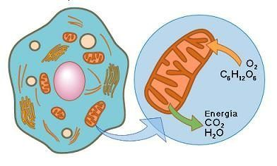
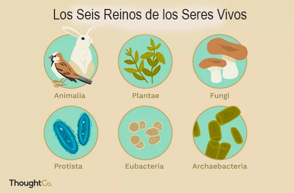
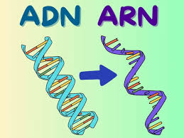
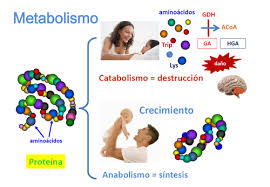
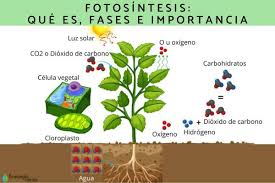
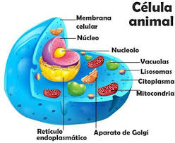
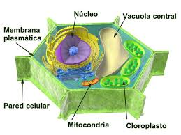

Respiración celular
La respiración celular es el proceso mediante el cual las células obtienen energía a partir de moléculas orgánicas, especialmente la glucosa. Este proceso ocurre en las mitocondrias y tiene como principal producto el ATP (adenosín trifosfato), que es la energía que utilizan las células para funcionar. Existen dos tipos: la aeróbica, que utiliza oxígeno y produce más ATP, y la anaeróbica, que no necesita oxígeno y genera menos energía. La respiración aeróbica se divide en tres etapas: glucólisis (en el citoplasma), ciclo de Krebs (en la matriz mitocondrial) y cadena de transporte de electrones (en la membrana mitocondrial interna). En conjunto, este proceso convierte la glucosa y el oxígeno en dióxido de carbono, agua y energía.
En casi todas las células vegetales y animales, cuando hay oxígeno presente, estas células experimentarán respiración aeróbica y es el proceso energético que produce mayor ATP. La respiración aeróbica requiere las mitocondrias de la célula y ocurre en tres etapas distintas: la glucólisis, el ciclo de Krebs y la cadena de transporte de electrones.
Respiración Celular Aeróbica: El oxígeno actúa como aceptor final de electrones en la cadena de transporte de electrones, permitiendo la producción de grandes cantidades de ATP.
Respiración Celular Anaeróbica: En ausencia de oxígeno, las células pueden utilizar otros compuestos como aceptores finales de electrones para generar ATP, aunque en menor cantidad.

Reinos de la vida
Los reinos de la vida son una forma de clasificar a todos los seres vivos según sus características principales. Actualmente se reconocen cinco o seis reinos, dependiendo del modelo utilizado: Monera (bacterias), Protista (organismos unicelulares con núcleo), Fungi (hongos), Plantae (plantas), Animalia (animales) y a veces se separan las arqueas en el reino Archaea. El reino Monera agrupa a organismos unicelulares sin núcleo definido (procariotas), como las bacterias. Los protistas pueden ser unicelulares o multicelulares simples y poseen núcleo (eucariotas), como las algas y protozoos.
El reino Animalia es el más evolucionado y se divide en dos grandes grupos: vertebrados e invertebrados. Los animales son seres pluricelulares y eucariotas de alimentación heterótrofa, respiración aeróbica, reproducción sexual y capacidad de desplazamiento. Este reino es uno de los más biodiversos y está compuesto por mamíferos, peces, aves, reptiles, anfibios, insectos, moluscos y anélidos, entre otros.
Los árboles, las plantas y demás especies vegetales forman parte del reino Plantae, uno de los más antiguos y que se caracteriza por su naturaleza inmóvil, pluricelular y eucariota. Estos seres autótrofos, que contienen celulosa y clorofila en sus células, son imprescindibles para la vida en la Tierra al liberar oxígeno a través de la fotosíntesis. En cuanto a la forma de reproducirse, esta puede ser de tipo sexual o asexual.
Reino fungi este nombre se utiliza para designar al reino de los hongos, que contempla a las levaduras, los mohos y todas las especies de setas. Estos organismos pluricelulares, aerobios, eucariotas y heterótrofos contienen quitina en sus paredes celulares, parasitan a otros seres vivos para alimentarse y se reproducen mediante esporas.
Reino protoctista este grupo es el más primitivo de los eucariontes y de él provendrían todos los demás. El reino Protista es parafilético —contiene al ancestro común pero no a todos sus descendientes— y engloba a aquellos organismos eucariotas que no se consideran ni animales, ni plantas ni hongos, como los protozoos. Al ser tan heterogéneo resulta difícil caracterizarlo, ya que sus integrantes tienen muy pocas cosas en común.
Reino monera es el reino de los seres vivos microscópicos y aglutina a los organismos procariotas (arqueas y bacterias). Este grupo está presente en todos los hábitats y lo forman seres unicelulares sin núcleo definido. La mayoría de las bacterias son aerobias y heterótrofas, mientras las arqueas suelen ser anaerobias y de metabolismo quimiosintético.

ADN y ARN
El ADN (ácido desoxirribonucleico) y el ARN (ácido ribonucleico) son moléculas fundamentales para la herencia y la producción de proteínas. El ADN contiene la información genética de todos los seres vivos y está formado por dos cadenas en forma de doble hélice compuestas por nucleótidos, cuyas bases son: adenina (A), timina (T), citosina (C) y guanina (G). En cambio, el ARN es de una sola cadena y contiene uracilo (U) en lugar de timina. Existen varios tipos de ARN: el mensajero (ARNm), el de transferencia (ARNt) y el ribosómico (ARNr), cada uno con funciones específicas en la síntesis de proteínas. El ADN se encuentra en el núcleo de las células eucariotas, mientras que el ARN puede estar en el núcleo y el citoplasma.
El ADN tiene una estructura de doble hélice, que consiste en dos cadenas lineales que se enrollan sobre sí mismas, formadas por unidades llamadas nucleótidos. Esta forma espiralada le otorga al ADN propiedades fundamentales, como la capacidad de duplicarse de manera autónoma. Este proceso se conoce como replicación del ADN.
El ácido ribonucleico o ARN es un ácido nucleico que participa en procesos biológicos esenciales para los seres vivos junto con el ADN y las proteínas. Está presente tanto en las células procariotas como en las eucariotas, y es el único material genético de ciertos virus (los virus ARN).

Fases y tipos de metabolismo
El metabolismo se divide en dos fases principales: anabolismo y catabolismo. El anabolismo es la fase constructiva, donde se forman moléculas complejas a partir de otras más simples, requiriendo energía. El catabolismo, por otro lado, es la fase destructiva, donde moléculas complejas se descomponen en otras más simples, liberando energía.
Fases del Metabolismo:
Anabolismo (Fase Constructiva): En esta fase, se utilizan moléculas simples, como aminoácidos y glucosa, para construir moléculas más complejas, como proteínas y glucógeno. Este proceso requiere energía, que se obtiene del catabolismo o del consumo de alimentos.
Catabolismo (Fase Destructiva): En esta fase, moléculas complejas, como proteínas, grasas y carbohidratos, se descomponen en moléculas más simples, liberando energía en el proceso. Esta energía se utiliza para alimentar el anabolismo y para otras funciones corporales.
Tipos de Metabolismo (según nutrición):
Metabolismo Proteico: Se caracteriza por una mayor preferencia por las proteínas como fuente de energía y construcción de tejidos. Las personas con este tipo de metabolismo suelen tener un apetito voraz por alimentos proteicos y pueden ser más resistentes a la ganancia de peso.
Metabolismo Carbohidrático: Se caracteriza por una mayor preferencia por los carbohidratos como fuente de energía. Las personas con este tipo de metabolismo suelen tener un apetito por los carbohidratos y pueden ser más propensas a ganar peso si no se controlan.
Metabolismo Mixto: Es una combinación de los dos anteriores, donde el cuerpo utiliza tanto proteínas como carbohidratos de manera equilibrada para obtener energía y construir tejidos.
El ácido ribonucleico o ARN es un ácido nucleico que participa en procesos biológicos esenciales para los seres vivos junto con el ADN y las proteínas. Está presente tanto en las células procariotas como en las eucariotas, y es el único material genético de ciertos virus (los virus ARN).

Fotosíntesis
La fotosíntesis es el proceso por el cual las plantas, algas y algunas bacterias transforman la energía solar en energía química. Este proceso ocurre principalmente en las hojas, dentro de unos orgánulos llamados cloroplastos, que contienen clorofila, el pigmento que capta la luz solar. La fórmula básica de la fotosíntesis es: dióxido de carbono (CO₂) + agua (H₂O) + luz solar → glucosa (C₆H₁₂O₆) + oxígeno (O₂). La fotosíntesis se divide en dos fases: la fase luminosa, donde se convierte la energía solar en energía química (ATP y NADPH), y la fase oscura o ciclo de Calvin, donde se sintetiza glucosa.
¿Cómo funciona?
Absorción de luz: La clorofila, un pigmento verde presente en los cloroplastos de las células vegetales, absorbe la energía de la luz solar.
Conversión de energía: La energía de la luz se utiliza para convertir el dióxido de carbono (CO2) y el agua (H2O) en glucosa (un tipo de azúcar).
Liberación de oxígeno: Durante este proceso, se libera oxígeno a la atmósfera como subproducto.

Célula animal
La célula animal es una unidad estructural y funcional de los animales. Es un tipo de célula eucariota, lo que significa que posee núcleo definido y organelos especializados. A diferencia de la célula vegetal, no tiene pared celular ni cloroplastos. Está rodeada por una membrana plasmática que regula el paso de sustancias. En su interior se encuentra el núcleo, que contiene el ADN, y el citoplasma, donde se ubican organelos como las mitocondrias (productoras de energía), el aparato de Golgi (procesamiento y transporte), el retículo endoplasmático (síntesis de proteínas y lípidos), lisosomas (digestión celular) y ribosomas (síntesis de proteínas). También contiene centrosomas, que participan en la división celular.

Célula vegetal
La célula vegetal también es una célula eucariota, pero tiene características únicas que la diferencian de la célula animal. Posee una pared celular compuesta de celulosa, que le da rigidez y forma. Contiene cloroplastos, responsables de realizar la fotosíntesis gracias a la clorofila que captan la luz solar. Además, tiene una vacuola central grande que almacena agua, nutrientes y desechos, ayudando a mantener la turgencia celular. Como en la célula animal, también están presentes el núcleo, mitocondrias, retículo endoplasmático, aparato de Golgi y ribosomas. La membrana plasmática está justo debajo de la pared celular y controla el paso de sustancias. Las células vegetales forman tejidos especializados como los conductores (xilema y floema), que transportan agua y nutrientes.
